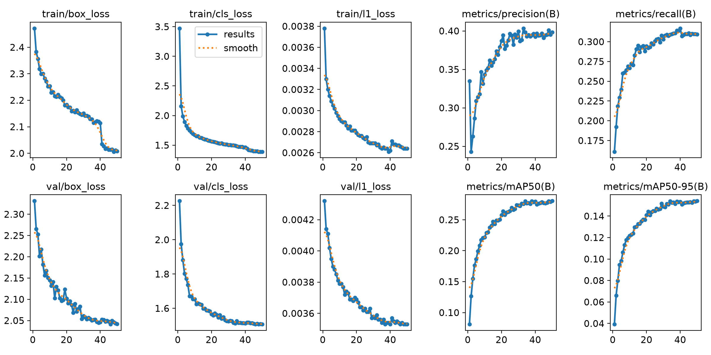
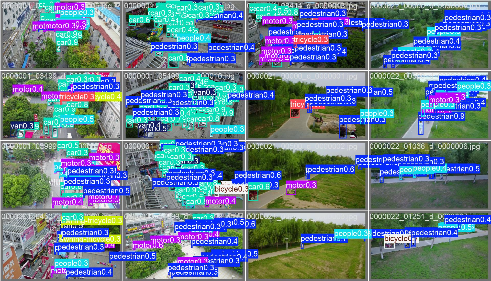
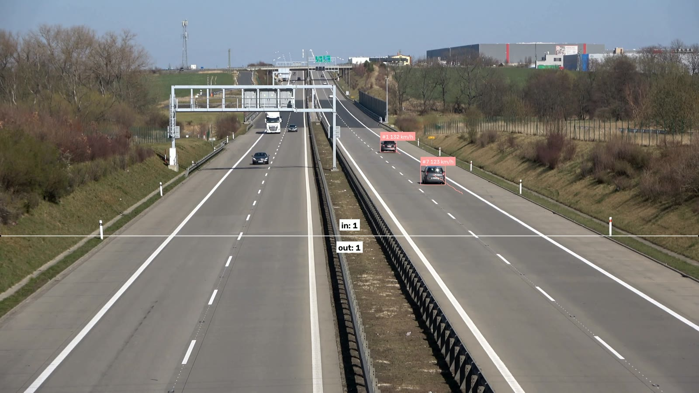
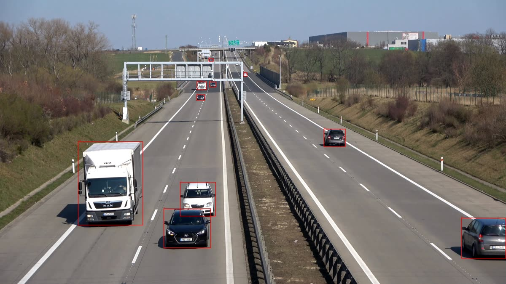

Traffic Lens
Vehicle detection → tracking → line-crossing counts → calibrated speed, plus a foundation-model auto-labeling workflow and a YOLO26 fine-tune on VisDrone. Run on 4K motorway footage.

Run 1 finished cleanly and was wrong in five places
The first pass of this project completed end to end without a single exception. Numbers came out, plots rendered, the JSON looked plausible. It was also wrong five separate times — and every one of those bugs was silent.
None of them were found by anything crashing. They were found by checking outputs against things known independently of the code: motorways aren't 55 km/h zones, drone datasets don't contain boats, loss curves that are still falling mean training isn't finished.
1 · A baseline that measured nothing
val() matches predictions to ground truth by class index, not by name. The COCO model's index 4 (airplane) was being graded against VisDrone's index 4 (van). Nine of ten rows compared unrelated categories.
airplane, train and boat — for drone footage over Chinese streets.
2 · Speeds off by roughly 8×
The homography's calibration quad was placed by eye and assumed 7 m × 30 m of road. The region actually visible is 25 m × 250 m. Distance error propagates linearly into speed, so every vehicle was under-reported by the same factor.
Caught by asking whether 55 km/h is plausible on a free-flowing four-lane motorway. No metric flags this.3 · Half the vehicles never detected
4K source, 640 px inference default. A car ~60 px wide becomes ~10 px after downscaling — below what the detector reliably fires on. The counter said "in: 1, out: 1" and was correct about the two cars it could see.
Caught by looking at the output image rather than only the summary counts.4 · A metric that couldn't answer its own question
Tracker configs were compared on unique-ID count alone. But lowering the activation threshold both fragments tracks and admits genuine new detections — two opposite explanations predicting the same movement.
Caught by asking what each hypothesis predicts before reading the number.5 · Training that stopped for the wrong reason
20 epochs, mAP50 0.246, presented as the model's result. Both validation losses were still declining. Training ended because the cosine schedule had decayed the LR to ~4e-5 — a budget artifact reported as a result.
Caught by readingresults.png rather than the final row of results.csv.
LEARNINGS.md documents each bug: what was claimed, what actually happened, how it was caught, the fix, and the transferable rule. It is the most useful thing in this repo — everything below is run 2, after the corrections.
Results — run 2
VisDrone fine-tune
YOLO26n fine-tuned on VisDrone2019-DET (6,471 train / 548 val, 10 classes), 50 epochs, imgsz 640, batch 16, ~60 min:
| Metric | 20 epochs (run 1) | 50 epochs (run 2) |
|---|---|---|
| mAP50 | 0.246 | 0.280 |
| mAP50-95 | 0.134 | 0.154 |
| precision | 0.364 | 0.402 |
| recall | 0.292 | 0.308 |
This one actually converged. mAP50 over the last three epochs: 0.2801 → 0.2790 → 0.2804 — flat. The extra 30 epochs bought +3.4 pp mAP50, and the curve says there's little left without a bigger model or higher resolution.

Was fine-tuning worth it? A baseline that's actually valid
Run 2 remaps VisDrone ground truth into COCO's label space (pedestrian+people→person, car+van→car, motor→motorcycle, and so on), drops the two classes with no COCO equivalent, and evaluates both models on the categories they genuinely share:
| Model | mAP50 | mAP50-95 |
|---|---|---|
| COCO-pretrained (remapped GT, shared classes) | 0.028 | 0.013 |
| Fine-tuned (shared classes) | 0.320 | 0.176 |
| Run 1's invalid baseline (index mismatch) | 0.017 | 0.008 |
The interesting part: fixing the label mapping moved the baseline from 0.017 to only 0.028. The pretrained model really is near-useless on this data, so run 1's conclusion was directionally right while its measurement was meaningless. Both facts are worth stating — a right answer from a broken method is still a broken method, and it only looked fine here by luck.
One asymmetry, noted honestly: the fine-tuned model must split pedestrian vs people and car vs van, while the baseline gets to lump each pair together. The fine-tuned task is harder, so if anything the 11× understates the gap.

Inference resolution: 640 vs 1280 px
Same clip, same model, same tracker — only the inference size changed:
| 640 px | 1280 px | |
|---|---|---|
| detections / frame | 3.10 | 4.88 (+57%) |
| mean track length | 47.8 frames | 81.3 frames (+70%) |
| unique IDs | 13 | 12 |
| median speed | 124.1 km/h | 122.9 km/h |
Read those together: more detections per frame, yet fewer unique IDs and much longer tracks. Higher resolution didn't just find extra vehicles — it stopped the tracker losing and re-issuing the ones it already had.

ByteTrack parameter sweep
Same 200-frame clip at 1280 px. The three columns exist so that two competing explanations predict different things:
| activation | buffer | unique IDs | det / frame | mean track length |
|---|---|---|---|---|
| 0.50 | 10 | 8 | 4.28 | 106.9 |
| 0.25 | 30 | 12 | 4.88 | 81.3 |
| 0.10 | 60 | 12 | 4.92 | 82.0 |
- 0.50 → 0.25 raises detections/frame and IDs while mean track length falls. It's genuinely finding more vehicles, but the extra ones are marginal detections forming shorter, flakier tracks — both effects at once.
- 0.25 → 0.10 changes essentially nothing. The threshold has saturated; there's nothing left to admit.
Practical read: 0.50 / 10 gives the most stable tracks if you only care about confidently-tracked vehicles; 0.25 / 30 trades some stability for ~14% more coverage. Crossing counts stayed at 2 in / 1 out across all three — the vehicles that actually cross the line are large and confidently detected, so the counter is insensitive to these knobs.
A real ID-switch count needs ground-truth tracks and MOTA/IDF1, which this clip doesn't have. Track length is a stand-in, and it's labelled as one rather than quietly presented as the real thing.
Speed estimation
Median 122.9 km/h across tracked vehicles — plausible for free-flowing motorway, which is the first thing to check before trusting any of it. The calibrated region is 25 m × 250 m, measured rather than guessed, and the pipeline now discards points falling outside that quad: a homography extrapolates confident nonsense beyond the region it was fitted on.
This calibration is valid for this camera only. Any other footage needs its own measured road quad, or the speeds will be wrong in exactly the same way run 1's were.
Auto-labeling with Grounding DINO
37 zero-shot boxes across 6 frames from the text prompt "car. truck. bus. motorcycle." — no training, no manual annotation. Output is YOLO-format, ready for CVAT import.

Run it
Everything above was generated by one notebook on a GPU — run_all_colab.ipynb. Open it in Colab, set a T4 runtime, Run all, and it downloads every artifact at the end.
The scripts also work standalone:
python track_count_speed.py --max-frames 100 # -> outputs/annotated.mp4 python benchmark.py # latency on your machine python autolabel.py --source my_frames/ --classes "car,truck,bus" python app.py # Gradio: upload a video, get one back
| File | Purpose |
|---|---|
run_all_colab.ipynb | Start here. Does everything on a Colab GPU and downloads every artifact |
track_count_speed.py | Detect + track + count + speed — process_video() is the shared core |
app.py | Gradio app: upload a video, get an annotated one back, same core function |
autolabel.py | Grounding-DINO auto-labeling — text prompt in, YOLO-format labels out |
benchmark.py | YOLO26 vs YOLO11 (vs RT-DETR) latency benchmark |
outputs/calib.json | The measured road quad for this clip — 25 m × 250 m |
What's done, what isn't
Done: pipeline, Gradio app, auto-labeling and fine-tune notebook executed end to end on GPU with artifacts committed; VisDrone fine-tune trained to convergence with weights published; a valid pretrained baseline via label-space remapping; speed calibrated against a measured road region; a resolution ablation and a tracker sweep with metrics that can distinguish competing explanations; every run-1 error documented.
Not done: the Gradio app deployed to a Hugging Face Space for a live demo link; the RT-DETR row in the benchmark table; own footage rather than the bundled demo clip; a CVAT correction pass timing auto-labeling against labelling from scratch.
YOLO26n and YOLO11n came out within noise of each other on CPU at 640 px — 93.1 ms vs 92.9 ms over 5 runs, both 2.6 M params. That's a real result and it's reported as one: at this size the architectural changes since v11 buy simplicity in the pipeline, not latency on this hardware.